Keycloak SSO and identity federation behind an nginx/njs API gateway
Can an application own 100% of its login UI while an identity provider still
owns 100% of the credentials? I built the thing to find out, and traced every
request to see what actually happens.
A note, humbly: I am not an expert, and none of this is a brag. It is all
about learning how to learn — and how to unlearn — and cherishing the
process somewhere along the way. If you got this far, I hope you learned
something too.
Most Keycloak integrations settle for one of two compromises. You either accept
the identity provider's hosted pages and theme them, or you build authentication
yourself and take on password storage, lockout, rate limiting and audit. This is
an attempt at neither: every pixel is the application's, and no credential ever
touches application code.
Where I am coming from. I am not a backend or frontend
developer. I came at this wanting to understand authentication and
authorization from a 360° view — not "which library do I call", but what
actually crosses the wire, which component is entitled to decide what, and
where a decision becomes irreversible. The frontend and backend in this
project exist only to make those questions concrete.
If you are approaching this the way I did, the vocabulary is most of the
barrier. Two specifications do the work, and they are often named together as
if they were one thing.
OAuth 2.0 is about access. It was designed so an application
can act on your behalf without holding your password — you approve it
once, and the app receives a token instead of a credential. What OAuth
deliberately does not define is who you are: a valid token proves someone
approved something, not which human is behind it.
OpenID Connect is a thin identity layer on top of OAuth 2.0.
It adds the missing half: an id_token describing the user, an
agreed set of claims like sub and email, the
openid scope, and standard endpoints for discovery and logout.
The short version: OAuth answers may you, OIDC answers who are you.
Mechanism
Used for
Authorization Code + PKCE
Google / social login. PKCE replaces the client secret a browser cannot keep
kc_idp_hint
Keycloak-specific: skip the provider chooser and broker straight to Google
Resource Owner Password Credentials
the e-mail OTP flow — see the caveat below
Refresh token grant
silent renewal, 30 s before expiry
Client credentials grant
njs authenticating as itself for Admin API calls
Token introspection (RFC 7662)
asking Keycloak "is this token still alive?"
RP-initiated logout
ending the Keycloak SSO session for social logins
An honest caveat. The Direct Grant is discouraged in modern
guidance and dropped in OAuth 2.1, because it normally means an application
handling a raw password. It is used here for the opposite reason: it is the
one flow that lets the application own the UI while Keycloak still
owns the credential — the password field is replaced by a one-time code that
Keycloak generates, hashes, expires and validates. No password is ever
collected by application code. That is a deliberate trade, and worth knowing
it is one.
What it looks like
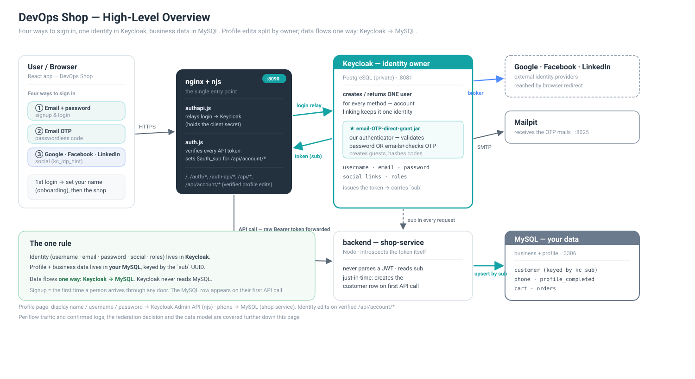
The shape of the system and the three journeys through it.
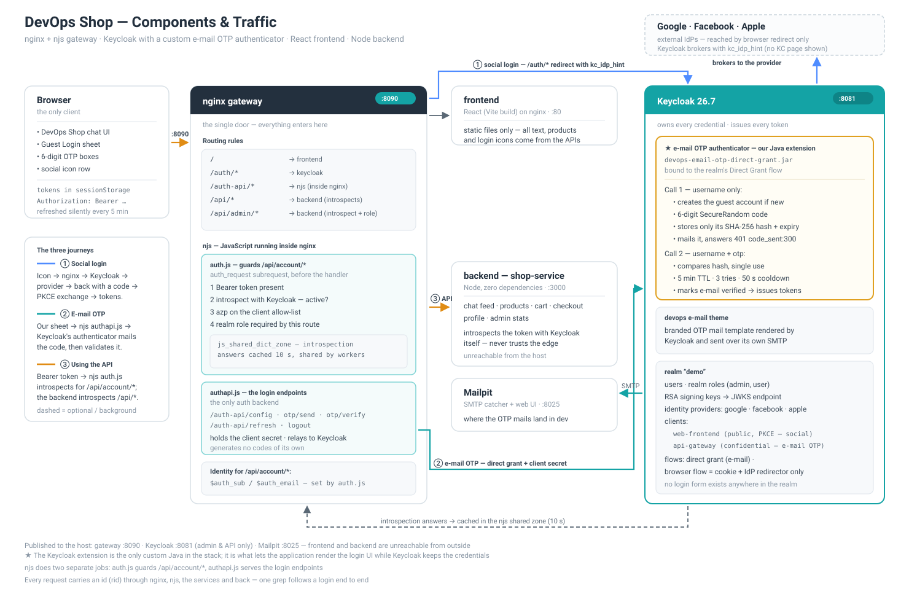
The same thing with every component, port and routing rule spelled out.
The decisions that shaped it
I did not want to trust a diagram. For each flow I followed one real request
through nginx, njs, Keycloak, the backend and MySQL, and read the logs at every
hop. Most of what follows came out of that — including several things I had
assumed were true and were not.
Keycloak keeps the credentials; the app keeps the interface
No Keycloak-rendered page appears anywhere. Social login is brokered straight
through with kc_idp_hint, so the user goes app → provider → app and
never sees an intermediate screen. E-mail OTP runs over the OAuth Direct Grant
with a custom Keycloak authenticator, so the code is generated, hashed, expired,
rate-limited and validated inside the identity provider.
Cost: ~200 lines of Java as a Keycloak SPI. Bought: the
credential handling, lockout and audit trail I would otherwise have had to write
and defend.
Single sign-on stays real — hiding the login page does not cost you it
This was the part I most expected to break. It does not: Keycloak still creates
a genuine SSO session, held as a cookie on the auth domain, even though the user
never saw a Keycloak screen. Sign in once and a second application in the same
realm signs you in without a prompt; the session can be ended centrally;
kc_idp_hint only skips the chooser, not the protocol.
What is avoided is Keycloak's UI, not Keycloak's behaviour.
Application developers never have to learn any of this
That is the property I care about most. What a product team sees is four JSON endpoints and a Bearer token:
Adding a login button does not require knowing what PKCE is, which client is
confidential, that a 401 from Keycloak means the code was mailed, or
that azp needs checking. All of that lives in the gateway and in one
Keycloak extension — a single place to review, and a single place to change when
a rule changes.
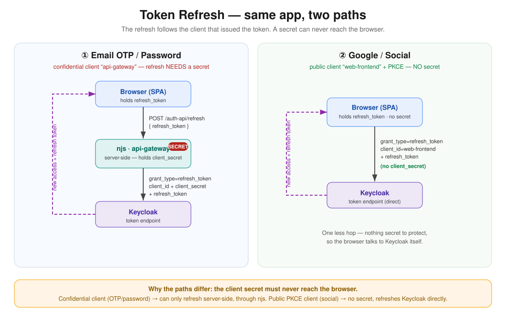
A refresh takes a different route depending on how the user signed in — and the
application never has to know which.
An API gateway needs real logic, not just routing
This is the conclusion I did not expect at the start. A gateway handles path- and
header-based routing out of the box, and for a while I assumed that plus an auth
plugin would be the whole job. It is not. The decisions that matter here cannot
be expressed as configuration:
is this token still alive? — not "is the signature valid", which is a different and weaker question
which client was it minted for? — an active token issued to some other client in the same realm is still active
does this particular route need a role, and which one?
what should the caller be told when it fails? — a 401 makes a browser throw its tokens away, a 403 does not, and picking the wrong one breaks a flow
None of that is path matching. I do not think this is peculiar to nginx either:
every serious gateway ships an extension point for exactly this reason — Lua in
Kong and OpenResty, custom authorizers in AWS API Gateway, policies in Apigee.
The escape hatch is not an admission that the product is incomplete; it
is where your business rules are supposed to live, because no vendor can
ship them for you.
The auth API runs inside nginx, not beside it
The OTP flow needs a confidential client secret, which cannot ship to a browser —
but a whole container to relay four endpoints seemed like a poor trade. So it runs
in njs, JavaScript executing inside nginx itself: no extra service, no extra
network hop, and the secret stays server-side.
Cost: njs is a small runtime — no npm, no require, and a
fresh VM per request, so nothing can be cached in a variable. That last constraint
shaped the code more than anything else.
The backend verifies tokens itself instead of trusting the gateway
The edge could verify a signature and pass identity headers down; that is faster.
Instead every /api/* call introspects the token with Keycloak, so the
backend learns about logout, revoked sessions and disabled users — things a
signature check cannot know, because they happen after signing. The cost is a
round-trip per request, softened by a 10-second cache; that cache is itself a
deliberate trade, since a revoked token stays usable for up to ten seconds.
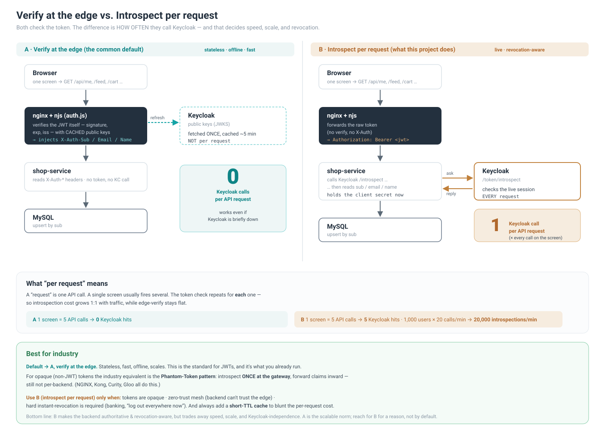
I did not pick this blind. Edge verification is the scalable norm and the right
default; introspection is what you reach for when the backend must be
authoritative about revocation — for a reason, not by default.
Keycloak does not get to see the application database
It is technically possible to point Keycloak at MySQL with user federation and
have one store. I decided against it.
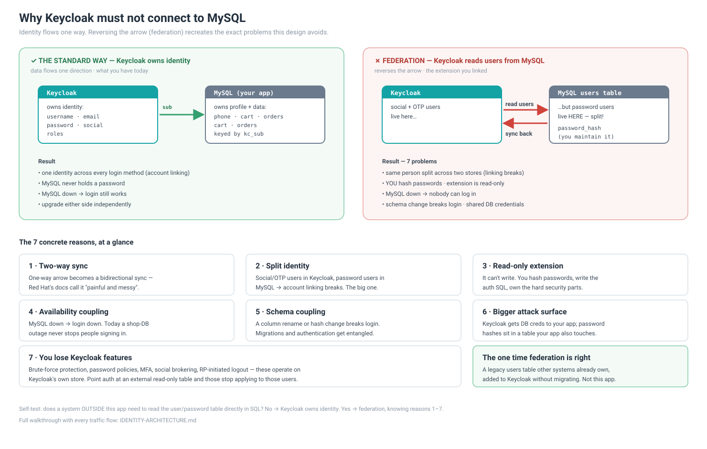
The reasoning, as its own decision note.
One immutable id links the two databases
Keycloak owns identity, MySQL owns the shop, and the only thing joining them is
the Keycloak sub. Not the e-mail, which changes; not the username,
which changes. So a user can change their e-mail and keep their order history,
because nothing the user can edit is load-bearing.
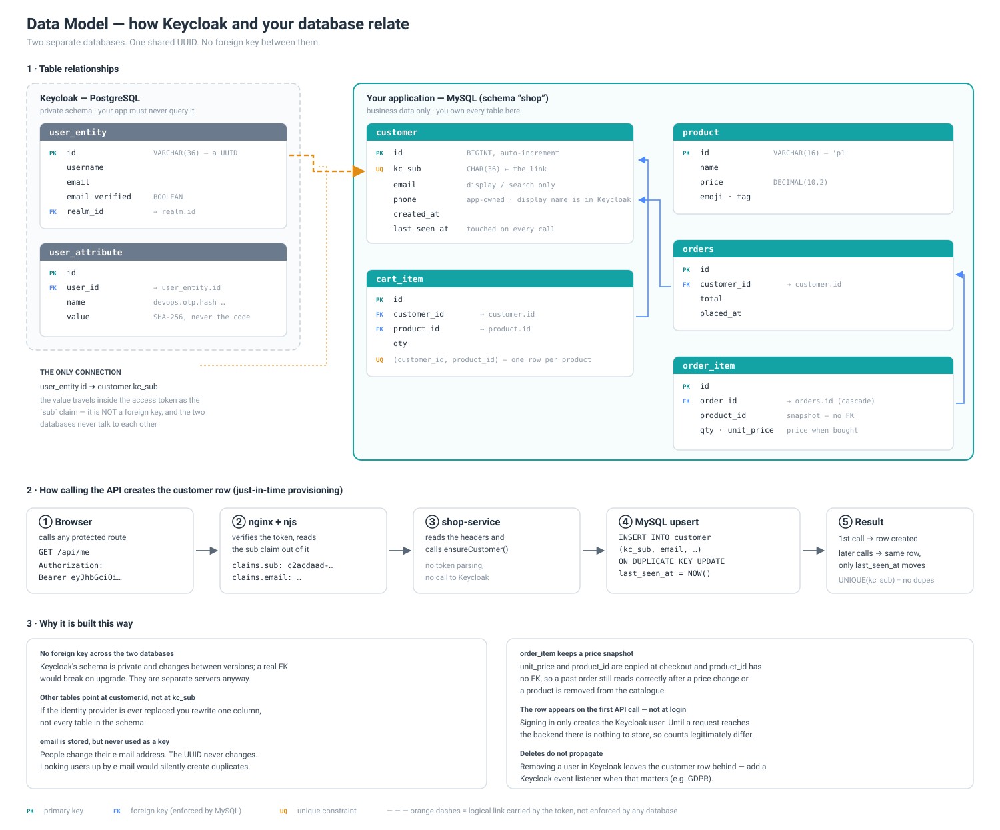
Two stores, joined on one immutable id.
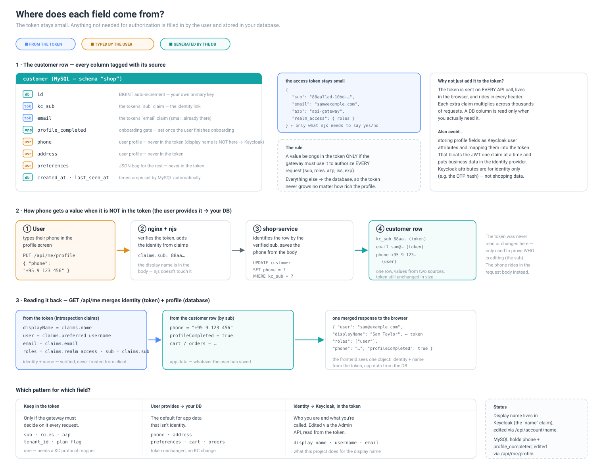
Every field has exactly one owner. Knowing which is the difference between a
sync bug and a system that cannot drift.
Changing an e-mail proves ownership before it commits
In an OTP system the e-mail is the login credential. Writing a new
address straight to the account would let a borrowed session repoint it at an
attacker's inbox — a temporary compromise becoming permanent. So the new address
is parked, a code is sent to it, and only a correct code promotes it.
E-mail and username move together, so the old address stops resolving entirely.
Account deactivation lives in the application, not the identity provider
The obvious approach is Keycloak's enabled flag. But social and OTP
users have no password, so disabling them there removes the only way they could
ever prove ownership again — "pause my account" quietly becomes "locked out
forever". Instead the block is a column in MySQL, checked on every request. The
user can still authenticate; they simply cannot do anything
except reactivate. Authentication intact, authorization suspended.
What only became clear by tracing
A 401 from Keycloak can mean success. The first
call of the OTP flow deliberately fails: the login is unfinished because the
code has only just been mailed. Reading that as an error would be reading the
protocol wrong.
401 versus 403 is a product decision.
A deactivated user holds a perfectly valid token. Answering 401
would make the client discard it — and the client needs that token to
reactivate.
Two calls to the same endpoint can be a protocol. E-mail OTP
is one Keycloak endpoint invoked twice, with the state carried in user
attributes rather than a session.
Ownership is the whole design. Almost every question resolved
to "who owns this field". Once that line is drawn, most of the remaining
answers follow.
The seven flows
Each one follows a single user action from browser to MySQL. The sequence
diagrams below are the short version; the
repository
has the step-by-step walkthrough with the file and function behind every step.
Authentication 1 · Login with an identity provider
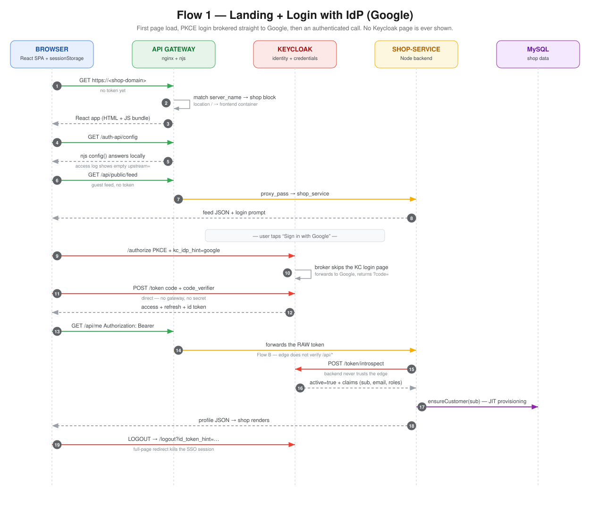
First page load, then Google brokered with no Keycloak page, then an authenticated call. Open the full board ↗
Authentication 2 · E-mail OTP login
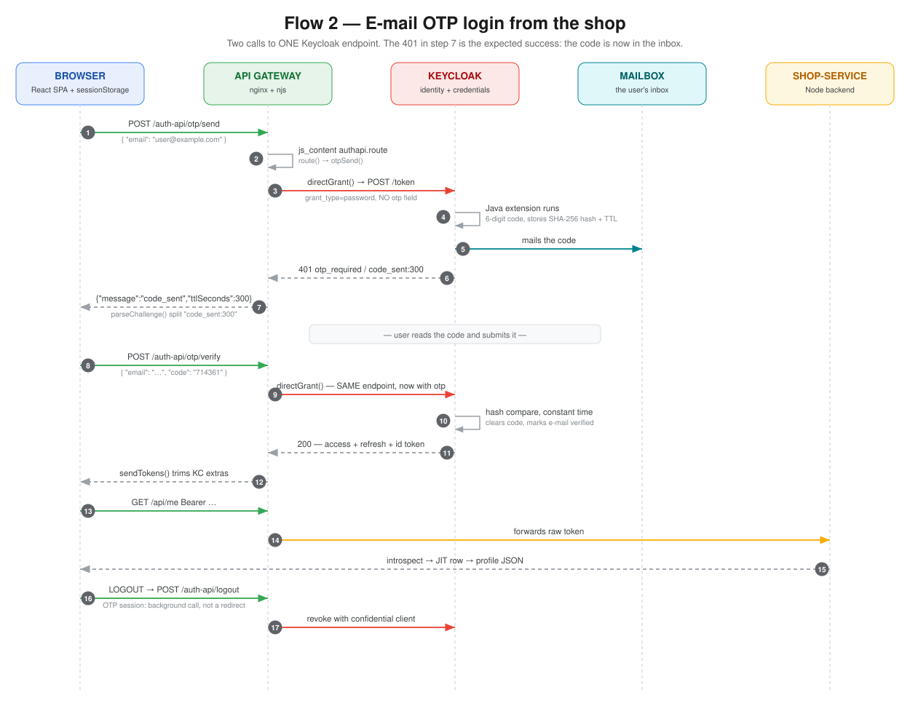
Two calls to one Keycloak endpoint. The 401 in the middle is the expected success. Open the full board ↗
Profile 3 · Change e-mail, verified
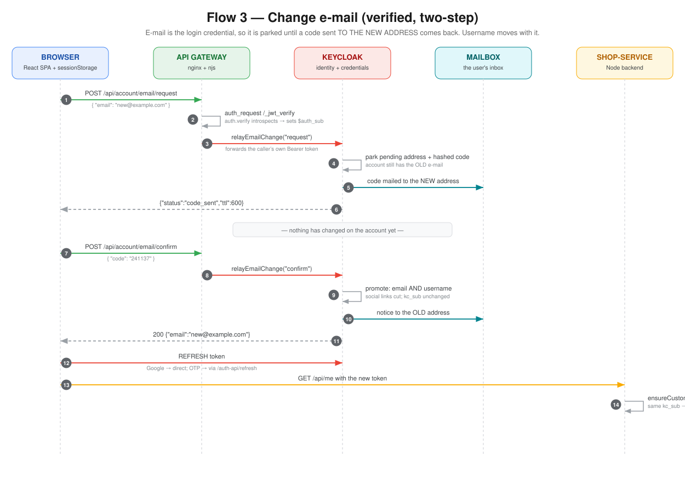
Park the address, mail a code to it, promote only on confirmation. Open the full board ↗
Profile 4 · Change display name
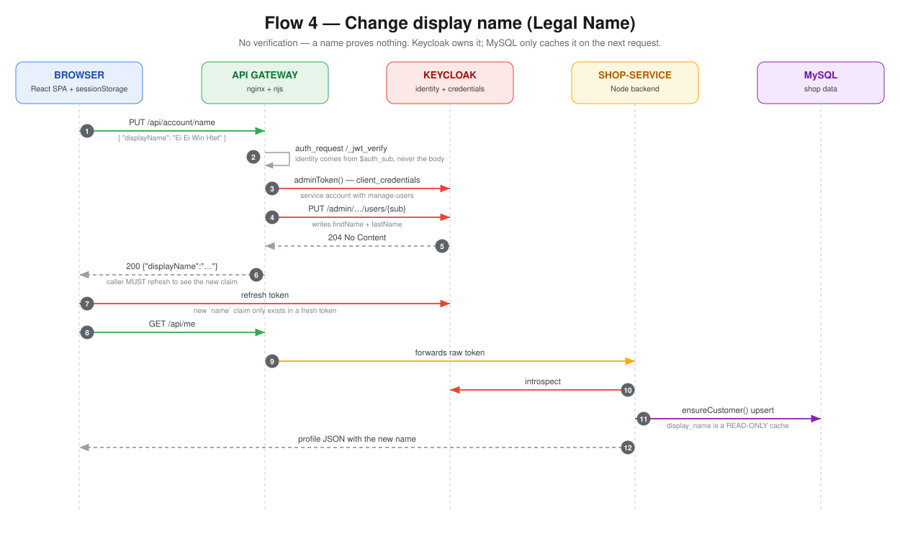
No verification — a name proves nothing. But the token must be refreshed to see it. Open the full board ↗
Lifecycle 5 · Deactivate
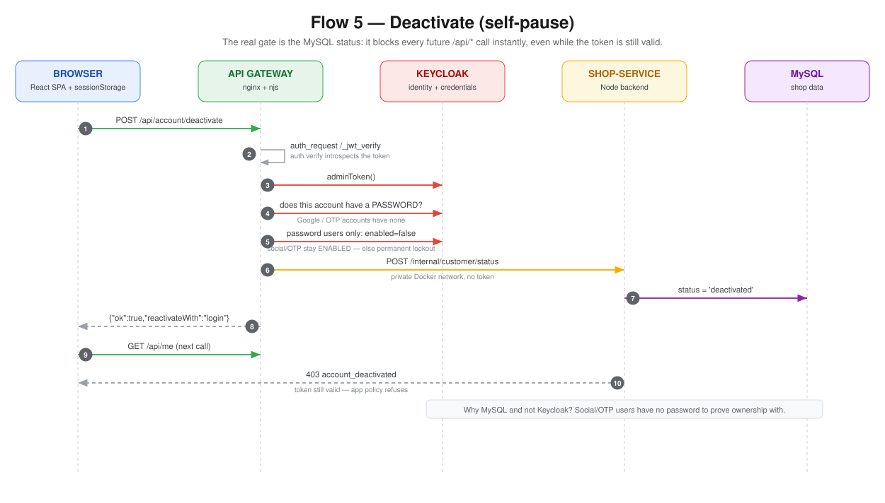
The block is a MySQL column, so it applies instantly — even to a token that is still valid. Open the full board ↗
Lifecycle 6 · Reactivate
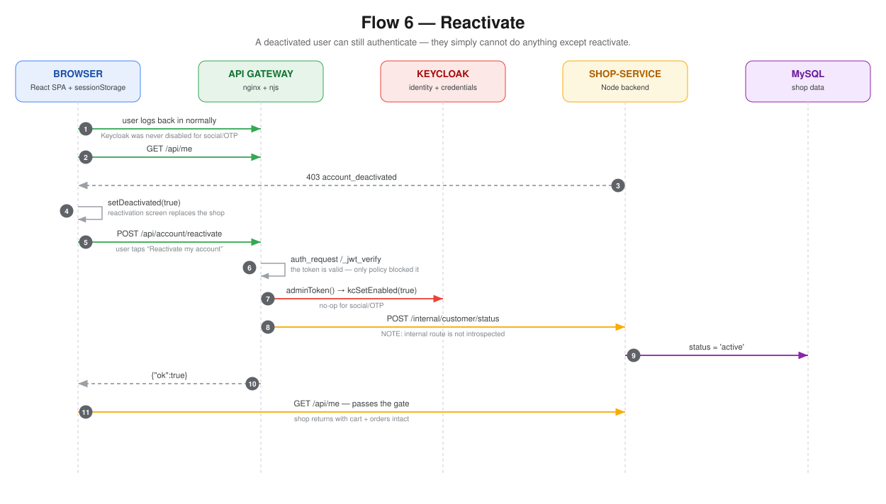
A deactivated user can still authenticate — they simply cannot do anything else. Open the full board ↗
Lifecycle 7 · Delete
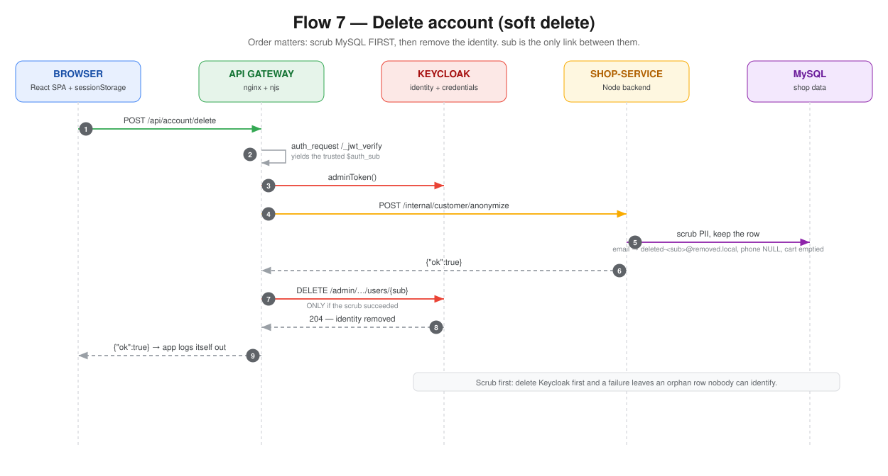
Scrub MySQL first, then remove the identity — sub is the only link between them. Open the full board ↗
The configuration underneath
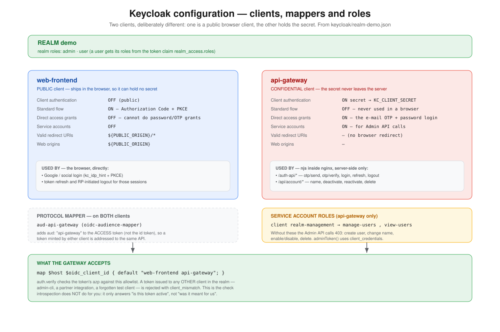
Two clients, deliberately different: one ships in the browser and can hold no
secret, the other never leaves the server and holds all of them.
Running it
Everything is docker-compose, single node. That is a deliberate limit — the
point of the project was the auth design, not the platform underneath it.
Locally
docker compose up --build
The first build takes a couple of minutes because Maven compiles the Keycloak
extension. Then the shop is on :8090, Keycloak on :8081,
and Mailpit on :8025 — which is where the OTP mails land, so you can
complete a login without configuring SMTP.
Point both subdomains at that IP, put the TLS certificate and the
.env on the host — they are the two things that never live in git —
then copy the code up and start it:
Two things that cost me an outage. Those rsync excludes are not
optional: your local .env is the dev one, and
gateway/certs/ usually does not exist locally — so with
--delete, rsync happily removes the TLS key from the server and
nginx then refuses to start. And compose derives its volume names from the
directory name, so deploying from a differently-named folder silently
starts with empty databases.
What I would change
Being honest about this is more useful than a feature list.
Tokens live in sessionStorage. This is the weakest
decision in the system and it was deliberate, to keep the demo simple. Any XSS
reads them. A backend-for-frontend holding an httpOnly cookie is the stronger
design.
Rate limiting is per account, not per IP. Nothing stops one
client enumerating many addresses. limit_req at the gateway belongs
there.
The internal API trusts the network. Endpoints the gateway uses
to update the shop database take no credential — they are protected only by not
being routable from outside.
Single-node by design. No clustering, no HA, no session replication.
No automated tests. Verification was manual and log-driven.
Still open
Phone verification over WhatsApp / Telegram — the next flow, and new territory for me.
Legal name at checkout — likely the same shape as the e-mail change flow, but unverified, and I would rather test than assume.